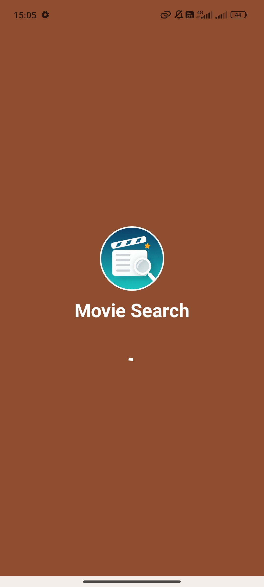
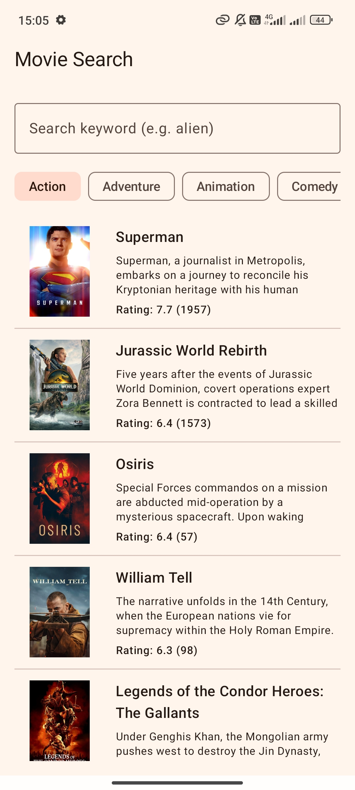
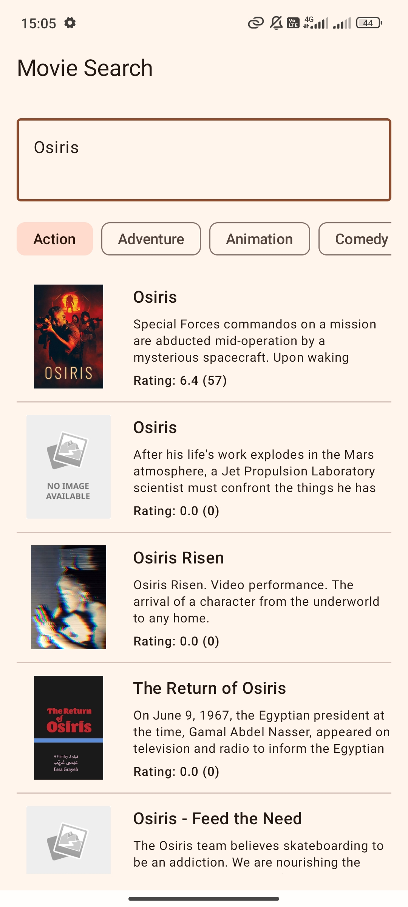
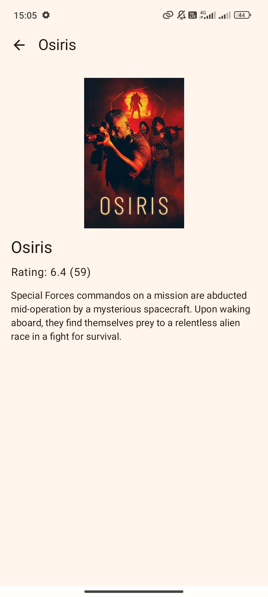

Android Developer Assignment – A simple TMDB movie search app
Οι βασικές βιβλιοθήκες / plugins που χρησιμοποιήθηκαν στο project:
// Dependency Injection
implementation(libs.hilt.android)
kapt(libs.hilt.compiler)
// Network
implementation(libs.retrofit)
implementation(libs.retrofit.gson)
implementation(libs.gson)
implementation(libs.retrofit.moshi)
implementation(libs.moshi.kotlin)
implementation("com.squareup.okhttp3:logging-interceptor:4.12.0")
implementation("com.squareup.okhttp3:okhttp:4.12.0")
// Navigation
implementation(libs.androidx.hilt.navigation.compose)
implementation("androidx.navigation:navigation-compose:2.7.7")
// Images
implementation("io.coil-kt:coil-compose:2.6.0")
// Coroutines
implementation("org.jetbrains.kotlinx:kotlinx-coroutines-android:1.8.1")
// UI
implementation("androidx.compose.material:material-icons-extended:1.6.8")
// Plugins (Gradle)
alias(libs.plugins.kotlin.kapt)
alias(libs.plugins.hilt)



